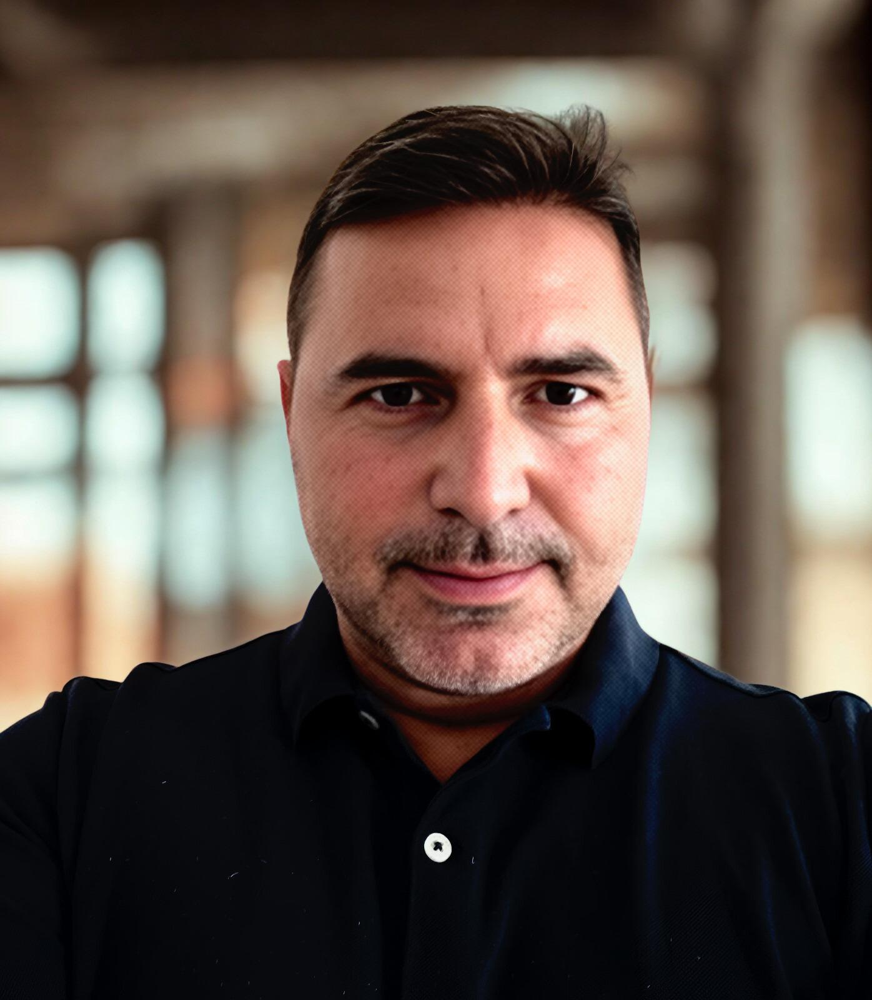

Live systems, not slides
Sessions include live demonstrations of agentic investment and risk systems running in production at NaviMod.
Executive programs, hands-on workshops and corporate AI labs that take banks, asset managers and financial institutions from AI strategy to working agents, taught by the team that builds and runs agentic AI systems in finance.
Most AI programs explain the technology from a distance. Ours come from a team that designs, deploys and governs agentic AI systems for financial institutions every day.
Sessions include live demonstrations of agentic investment and risk systems running in production at NaviMod.
Rooted in a university spin-off from Istanbul Technical University, with published research in machine learning, financial engineering and multi-agent systems.
Built from work with clearing houses, portfolio managers, investment firms and banks on AI, analytics and trading systems.
Every program ends with a concrete next step, and the same team can take your institution from prototype to production.
Agents change who does the work, who decides and who is accountable, so the transformation is as much organizational as technical. Four in-house programs take your institution through it as one path: leadership sets the direction, teams prove what works, and a joint lab turns it into a real system.
Build shared understanding at the top: what agentic AI changes in finance, where it creates value, and what the institution should do next.
Prove feasibility with working agents built with your teams.
Validate the use case on your data, measure the results and build the business case.
Executive Briefing opens the conversation. The Executive Program identifies the opportunities. The Hands-on Workshop proves feasibility. The Corporate AI Lab turns the opportunity into a real project.
A focused 90-minute briefing that equips boards and executive committees to oversee the move to AI and agentic AI with confidence.
The turns leadership direction into a concrete plan.
A strategic program on how agentic AI is reshaping financial services, and how your institution should lead the transformation.
The prototypes your highest-priority use case.
Your teams build a financial agent, connect agents into a governed workflow, then prototype a use case from your own institution.
The workshop shows the concept works. The validates it on your institution's data and infrastructure.
A structured engagement that turns a validated use case into a working agent proof of concept, a business case and a production roadmap.
Use-case inventory, data and infrastructure assessment, and a baseline of how the process runs today
Use-case selection, solution architecture, success KPIs and executive sponsor alignment
Iterative development on institutional data, starting with one agent at a supervised level of autonomy
Testing against historical and synthetic cases for accuracy, groundedness, policy compliance and cost: the evidence needed before autonomy widens
Results, business case and pilot recommendation presented to the executive committee
Pilot and production roadmap, widening agent authority step by step as evidence builds
The programs are designed and led by NaviMod's founder, with guest faculty from banking and FinTech joining selected sessions.

Founder & CEO, NaviMod Financial Analytics Solutions
Alp Ustundag founded NaviMod as a university spin-off to turn research in machine learning, optimization and financial analytics into production systems for banks, asset managers and market infrastructure institutions. At Istanbul Technical University he served as Professor of Industrial Engineering and as founding chair of the Department of Data Engineering and Business Analytics, where he established its M.Sc. in Big Data and Business Analytics. He founded and directed ITU's Big Data and Business Analytics and Data Science certificate programs for individual professionals and corporate cohorts. His advisory and systems work spans Takasbank, Ziraat Portfolio, Ak Investment, Akbank and Deutsche Bank Türkiye.
Author of The Agentic AI Company: How AI and Multi-Agent Systems Are Transforming Business (Springer, forthcoming) and editor of Business Analytics for Professionals and Industry 4.0: Managing the Digital Transformation (Springer). Ph.D. in Industrial Engineering, ITU; MBA, Boğaziçi University.
Most institutions start with the Executive Briefing or the Executive Program to agree on direction. Teams that already have a clear use case can start directly with the Hands-on Workshop. Every program can be booked on its own.
No. The workshop runs in a NaviMod sandbox on public, synthetic or sample data. Your teams bring the use case, not the data. Working with institutional data happens only in the Corporate AI Lab, under NDA and your governance policies.
No. All programs are designed for executives and mixed business, technology and risk teams. The hands-on labs use a guided, no-code environment.
Yes. In-house programs are tailored with use cases, regulation and examples relevant to your business line and market, whether you operate in Türkiye, the United States or elsewhere.
Programs are delivered in English or Turkish, depending on the cohort or the institution.
We are preparing a six-day Executive Certificate Program, FinTech in the AI Age, for professionals who join on their own behalf. Select it in the form below to join the interest list and receive the program brochure.
In your environment, in your cloud or on-premises, with the models your policies allow. Institutional data stays under your control throughout the engagement.
Send an inquiry below. We will reply with the program outline, a proposed format for your institution and available dates.
Tell us what you are looking for. We will reply with the program outline and the next available dates.
Thank you. We will reply within two business days with the program outline and next steps.